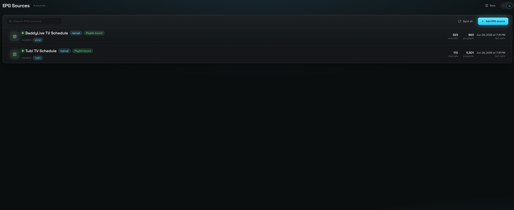
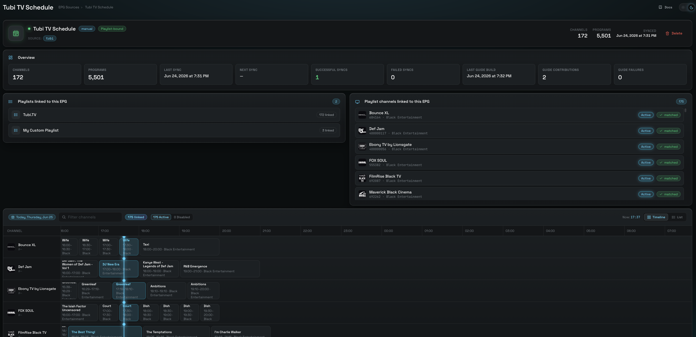

Guide data — what's on, and when
An EPG source registers one guide provider; a sync writes its channels and programs. Channel Mapping links them to your channels, and a compose weaves the guide into your playlist's .m3u — as its XMLTV sibling.
One provider, two collections
An EPG source is a row in epgsources registering one guide provider. A sync writes epgchannels (one row per guide channel) and programs (the airings), both keyed by a composite <epg>:<tvg_id> id so multiple sources never collide.
syncEpgSource.ts
Every kind — whether a manual Sync now or a scheduler tick — goes through the same path, which maintains each source's syncSuccessCount / syncFailCount and status.
Swap, don't merge
A source's old channels/programs are swapped for the fresh pull. The streaming-XMLTV path replaces up-front, so a mid-stream failure marks the source error and the next good sync heals it cleanly.
Four you add, one that's automatic
The source discriminator (stored lowercase) sorts guide providers. National guides are streamed so multi-GB XMLTV parses with bounded memory.
| Kind | Added via | Notes |
|---|---|---|
| gracenote | Add EPG Source → Gracenote | Provider/lineup grid; provenance fields (headend / lineup / postal / country) let the grid URL be rebuilt + re-synced. |
| epg-pw | Add EPG Source → EPG-PW | epg.pw per-channel XML. |
| jesmann | Add EPG Source → Jesmann (guided picker) | Large national XMLTV guides, streamed so multi-GB files parse with bounded memory. |
| xml file | Add EPG Source → Custom (upload) | One-shot uploaded XMLTV document. |
| remote url | Add EPG Source → Custom (URL) | Re-fetchable remote XMLTV URL (streamed, gzip-aware). |
| playlist-bound | (automatic) — the playlist's afterSync | Playlist-bound self-EPG (playlistBinding:true); not user-added. |
Who drives the refresh cadence
You own the schedule
Gracenote / EPG-PW / Jesmann / Custom XMLTV sync on demand or on a cronjobs schedule, independent of any playlist. Guides go stale fast, so a schedule is recommended.
The playlist owns the schedule
Built-in self-EPG sources have no manual sync of their own. They're written by the playlist's afterSync hook and re-asserted on every playlist sync. To refresh a bound guide you sync its playlist — the EPG Sources screen hides their sync/schedule controls.
The link between guide data and a playlist's channels is always the channel-level (tvg_id, epg) pair — set via Channel Mapping for user-added sources, self-linked for channel-adapter built-ins.
The two-sided linking workbench
Channel Mapping connects each playlist channel to the matching EPG channel so your channels display the right schedule. Your channels on one side, guide channels on the other.
Apples to apples
Narrow each column to a single source so you're comparing like with like. Per-column search and A–Z jump bars help you find a channel fast.
Best candidates first
An intelligent composite score of names and identifiers surfaces the likely matches — suggestions, not automatic links; you confirm them.
Guide id + its source
Linking saves a persisted two-factor pair immediately. The channel then shows program data in the published guide and its Unmatched count on the Dashboard drops.
Shared networks
Several playlist channels can point at the same EPG channel — useful when the same network appears in multiple playlists.


How a guide reaches a downstream client
Guide data only reaches a client at compose time, and composition is playlist-scoped: a guide is written as a sibling of the M3U by composeGuide(), which runs off the same Active channel set composeM3u() just wrote — so a guide can never drift from its M3U.
(tvg_id, epg) link; index by the composite key <epg>:<tvg_id>.epgchannels row → one <channel>, deduped by the bare tvg_id (first-wins). Pull programs → <programme>s, re-tagged to the bare tvg_id so each airing matches its channel id.<tv>, advertised via x-tvg-url. token-free · NOT per-userlastXmlAt + xmlGeneratedCount++ (or xmlFailCount++ on failure).Downstream, the player pairs the guide to the M3U by matching each <channel id> to a channel's tvg-id. That's why the compose re-tags everything to the bare tvg_id — a channel linked to an epgchannels row that isn't synced yet is skipped, never orphaned.